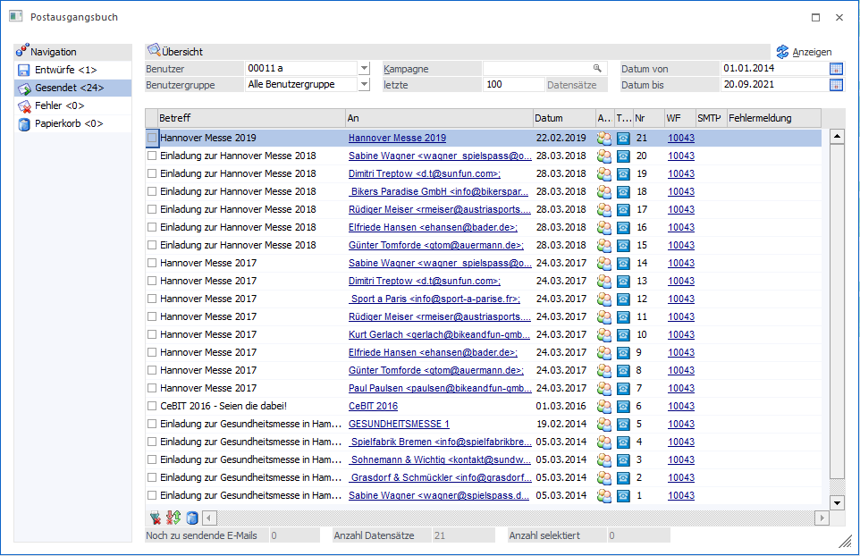
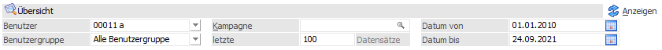
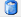
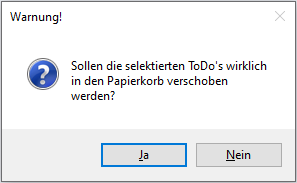
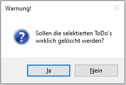
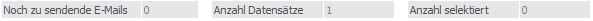

Das Postausgangsbuch zeigt eine Übersicht über die durchgeführten Aktionen. Die Navigation im Postausgangsbuch erfolgt über den linken Navigationsbereich mit den Einträgen:
ü Entwürfe <Anzahl>
ü Gesendet <Anzahl>
ü Fehler <Anzahl>
ü Papierkorb <Anzahl>

Navigation
Ø Entwürfe
Hier werden Datensätze angezeigt, bei denen während der Erstellung der Ribbon-Button "Entwurf speichern" bzw. "Entwurf speichern (aufgeteilt)" selektiert wurde.
Ø Gesendet
In dieser Rubrik werden die bereits erledigten (gedruckten, gemailten oder gefaxten) Dokumente angezeigt.
Ø Fehler
In der Rubrik "Fehler" werden alle Datensätze angezeigt, die nicht ausgeführt werden konnten.
Ø Papierkorb
Im Papierkorb werden alle Datensätze angezeigt, die aus den Rubriken des "Postausgangsbuch" gelöscht wurden. In der Spalte "Status" ist ersichtlich, aus welcher Rubrik des Postausgangsbuches die jeweiligen Datensätze stammen.
Die Zahl in den spitzen Klammern "<>" gibt die Anzahl der Elemente an, die in der entsprechenden Rubrik vorhanden sind.
Übersicht

Ø Anzeigen
Durch das Anwählen des Buttons werden die folgend aufgeführten Optionen/Selektionen angewendet und zutreffende Datensätze werden in der Tabelle angezeigt.
Ø Benutzer
Es kann nach einem Benutzer gefiltert werden. Somit werden nur E-Mails des jeweiligen Benutzers angezeigt.
Ø Benutzergruppe
Es kann nach einer Benutzergruppe gefiltert werden.
Ø Kampagne
Es kann nach einer Kampagne gefiltert werden.
Ø letzte (Anzahl) Datensätze
Hier kann die Anzahl der anzuzeigenden Zeilen eingegeben werden.
Ø Datum von/Datum bis
Es kann das Zeitfenster der Ausgabe eingeschränkt werden.
Übersicht - Tabelle
Hier werden alle Elemente angezeigt, welche der selektierten Rubrik entsprechen.
Ø Spalte "Betreff"
Gibt den gewählten "Betreff" wieder.
Ø Spalte "An"
Zeigt den/die Adressaten an.
Ø Spalte "Datum"
Zeigt das Datum des Elements an.
Ø Spalte-"Aktionstyp" (die Art der Aktions-Typen kann anhand der verwendeten Symbole abgelesen werden)
ü Einzel-E-Mails
ü Serien-E-Mail (E-Mail an viele Empfänger)
ü Serien-Briefe
ü Serien-Faxe
Ø Spalte "Typ"
Die Tabellenspalte "Typ" kann folgende Werte beinhalten:
ü Debitoren/Kreditoren
ü Interessenten
ü Ansprechpartner/Kontakte
ü Vertreter
ü Arbeitnehmer
Ø Nr
Zeigt die fortlaufende Nummerierung der Elemente im Postausgangsbuch.
Ø WF
Gibt Informationen über eine hinterlegte Aktion/einen Workflow.
Ø SMTP
Wenn als Versandmethode "SMTP" selektiert wurde, wird dies in der Zeile gekennzeichnet:
Ø Fehlermeldung
Sollte es beim Versand Komplikationen gegeben haben, so werden diese hier aufgeführt.
Tabellenbuttons
Ø alle Datensätze selektieren
Mit diesem Button werden alle Datensätze in der ersten Spalte der Tabelle markiert.
Ø Selektion umkehren
Mit diesem Button werden markierte/unmarkierte Datensätze in der Tabelle in das jeweilige Gegenteil gewandelt: Selektierte Datensätze werden deselektiert und umgekehrt.
Ø

LöschenDurch Anklicken des Löschen-Buttons werden die selektierten Datensätze in den Papierkorb des Postausgangsbuches verschoben, wobei die dazugehörige Meldung entsprechend bestätigt werden muss.

Damit sind die Elemente jedoch noch nicht endgültig gelöscht:
ü Selektierte Datensätze können im Papierkorb durch den Button "selektierte Datensätze rückverschieben" entsprechen an ihren Ursprungsort geschoben werden.
ü Erst wenn Einträge im Papierkorb erneut selektiert und in Folge der Button "selektierte Datensätze löschen" geklickt wird, sind diese nicht mehr auffindbar. Eine Warnung macht darauf aufmerksam.

Hinweis
Auch außerhalb des Papierkorbs können Datensätze direkt gelöscht werden: Wird während der Anwahl des Buttons "selektierte Datensätze löschen" die STRG-Taste gedrückt, kommt es analog zur Warnung innerhalb des Papierkorbes zu der o. a. Warnung.
Ø Selektierte Datensätze rückverschieben (steht im Papierkorb zur Verfügung)
Einträge aus dem Papierkorb können in den jeweiligen Ordner zurück verschoben werden.
Status der Übersicht
Unterhalb der Übersicht und der Tabellen-Button-Leiste wird die Anzahl der noch zu sendenden Datensätze, die Anzahl der angezeigten, sowie die Anzahl der markierten Datensätze aufgeführt.
